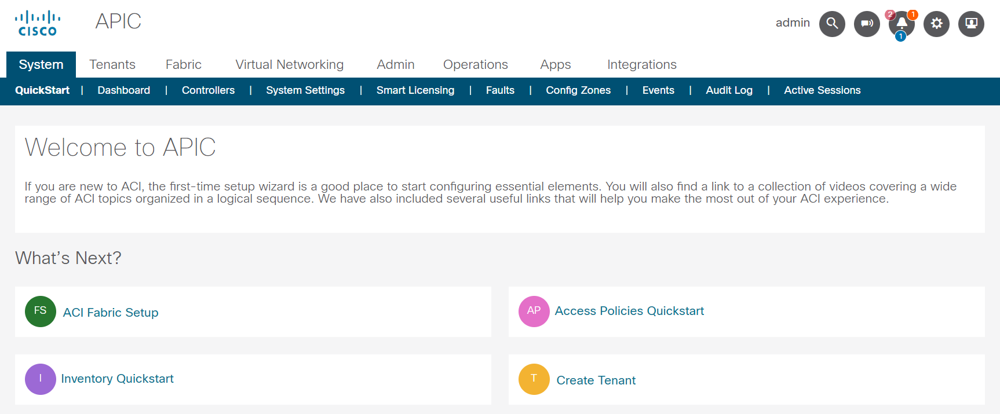
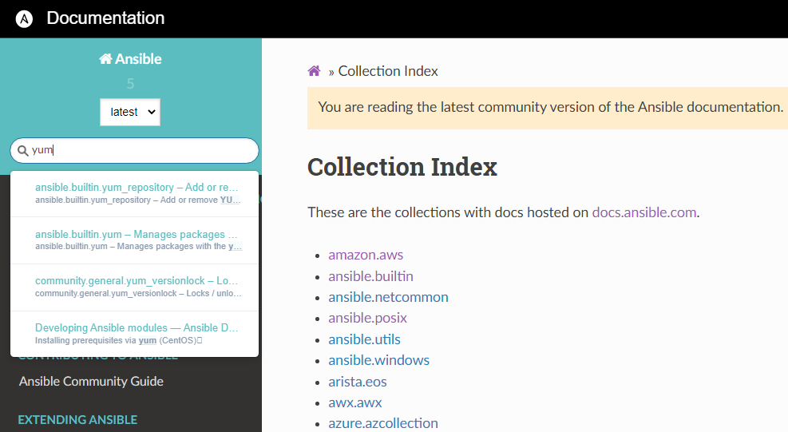
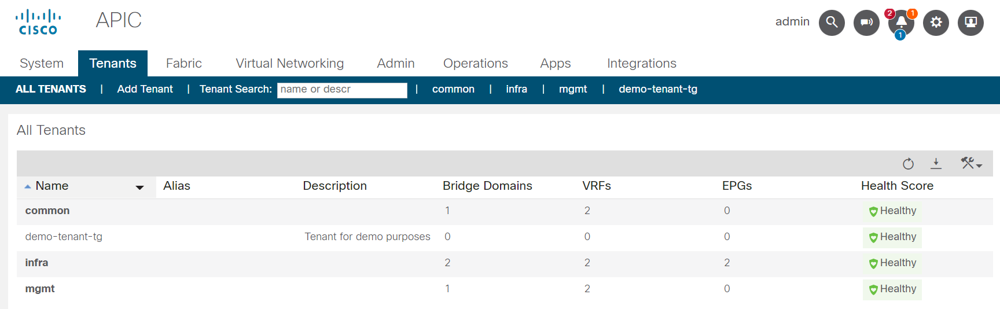

Project - Network automation
Although the (historical) focus of Ansible was Linux automation, it is very strong with automating network as well.
Ansible collections support a wide range of vendors, device types, and actions, so you can manage your entire network with a single automation tool. With Ansible, you can:
- Automate repetitive tasks to speed routine network changes and free up your time for more strategic work
- Leverage the same simple, powerful, and agent-less automation tool for network tasks that operations and development use
- Separate the data model (in a playbook or role) from the execution layer (via Ansible modules) to manage heterogeneous network devices
- Benefit from community and vendor-generated sample playbooks and roles to help accelerate network automation projects
- Communicate securely with network hardware over SSH or HTTPS
Objective
Get to know network automation with Ansible.
Network automation uses the basic Ansible concepts, but there are some differences in how the network modules work.
Unlike most Ansible modules, network modules do not run on the managed nodes. From a user’s point of view, network modules work like any other modules. They work with ad hoc commands, playbooks, and roles. Behind the scenes, however, network modules use a different methodology than the other (Linux/Unix and Windows) modules use. Ansible is written and executed in Python. Because the majority of network devices can not run Python, the Ansible network modules are executed on the Ansible control node.
Guide
You will execute some automation tasks against Cisco ACI. The Cisco Application Centric Infrastructure allows application requirements to define the network. This architecture simplifies, optimizes, and accelerates the entire application deployment life cycle.
The Application Policy Infrastructure Controller manages the scalable ACI multi-tenant fabric. The APIC provides a unified point of automation and management, policy programming, application deployment, and health monitoring for the fabric. The APIC, which is implemented as a replicated synchronized clustered controller, optimizes performance, supports any application anywhere, and provides unified operation of the physical and virtual infrastructure.
The APIC enables network administrators to easily define the optimal network for applications. Data center operators can clearly see how applications consume network resources, easily isolate and troubleshoot application and infrastructure problems, and monitor and profile resource usage patterns.
The Cisco Application Policy Infrastructure Controller API enables applications to directly connect with a secure, shared, high-performance resource pool that includes network, compute, and storage capabilities.
Step 1 - Prepare project
Create a new project folder in your home directory:
We will be using a Cisco ACI Sandbox available online.

Open a new browser tab and go to https://sandboxapicdc.cisco.com/#.
Tip
The credentials for accessing the Cisco Sandbox are shown below, you can copy the content by using the symbol on the right of the code block.
Username:
Password:
Today, you might need additional Ansible modules. In the first part of the workshop, we only used a handful of modules which are all included in the ansible-core binary. With ansible-core only 69 of the most used modules are included:
[student@ansible-1 ~]$ ansible-doc -l
add_host Add a host (and alternatively a group) to the ansible-playbook in-memory inventory
apt Manages apt-packages
apt_key Add or remove an apt key
apt_repository Add and remove APT repositories
assemble Assemble configuration files from fragments
assert Asserts given expressions are true
async_status Obtain status of asynchronous task
blockinfile Insert/update/remove a text block surrounded by marker lines
command Execute commands on targets
copy Copy files to remote locations
...
Additional modules are installed through collections, search the Collection Index in the Ansible documentation for a module or use the search field.

If, for example, you want to create an EC2 instance in AWS, you will need the module amazon.aws.ec2_instance. To get the module, you'll need the collection aws of the provider amazon. Download the collection with the ansible-galaxy utility:
[student@ansible-1 ~]$ ansible-galaxy collection install amazon.aws
Starting galaxy collection install process
Process install dependency map
Starting collection install process
Downloading https://galaxy.ansible.com/download/amazon-aws-3.2.0.tar.gz to /home/student1/.ansible/tmp/ansible-local-55382m3kkt4we/tmp7b2kxag4/amazon-aws-3.2.0-3itpmahr
Installing 'amazon.aws:3.2.0' to '/home/student1/.ansible/collections/ansible_collections/amazon/aws'
amazon.aws:3.2.0 was installed successfully
Tip
Well, you won't need the AWS collection, but automating the ACI with Ansible also requires additional modules, these are not included in the ansible-core binary and need to be installed with Ansible Galaxy.
Achieve the following tasks:
- Find appropriate collection for Cisco ACI automation in the documentation
- Collection installed
You can view the installed collections with this command:
[student@ansible-1 aci-automation]$ ansible-galaxy collection list
# /home/student1/.ansible/collections/ansible_collections
Collection Version
----------------- -------
ansible.posix 1.4.0
community.docker 2.7.0
community.general 5.3.0
Note
If you use the Ansible navigator (which utilizes an execution environment), the collection is available. The method for playbook execution is up to you, why not try it with both ways?!
Step 2 - Inventory and playbook
Within your newly created project folder, create an inventory file and a playbook file (the name of the files are up to you).
[student@ansible-1 aci-automation]$ touch inventory.ini
[student@ansible-1 aci-automation]$ touch playbook.yml
Tip
By default, Ansible will try to communicate via SSH. This will not work!
You have to instruct Ansible to communicate with the APIC REST Interface, the ACI modules do not run on the network devices or controller, they need to run on the Ansible control node locally!
Add the necessary parameters to your inventory file!
Use the same credentials for API communication as for the login to the APIC UI.
The API endpoint (host) for the ACI modules uses the URL of the sandbox, you won't need the prefix https://.
The documentation provides an extensive Guide for ACI automation, which also describes how to setup communication with APIC.
Testing the successful communication with the API could be done by querying ACI system information with the aci_system module. Create your playbook and add a task, utilizing this module. Fill all necessary parameter.
Run your playbook, if it returns a green ok status, communication is established.
For now, the gathered system information about the ACI system is not relevant for us, still, you could store the output in a variable and output it with an appropriate module, if you are curious.
Achieve the following tasks:
- Inventory and playbook created
- Use variables where possible (and useful)
- Successful communication with APIC established
You may encounter the following error messages:
Failure
Expect an error message complaining about certification verification:
If you see an error message like above, you can disable certificate validation for your task:
For a production environment this is obviously not recommended!
Failure
If you see one of the following error messages, ensure that the Sandbox is available:
Connection failed for https://sandboxapicdc.cisco.com/api/aaaLogin.json. Connection failure: The read operation timed out
Authentication failed: -1 Unable to parse output as JSON, see 'raw' output. Expecting value: line 1 column 1 (char 0)", "raw": "<html>\r\n<head><title>502 Bad Gateway</title></head>\r\n<body bgcolor=\"white\">\r\n<center><h1>502 Bad Gateway</h1></center>\r\n<hr><center>nginx/1.13.12</center>\r\n</body>\r\n</html>\r\n
Try to reload the APIC browser tab.
In case of an unavailable APIC sandbox, re-run your playbook when it comes back online.
Step 3 - Create a new tenant
The APIC manages the scalable ACI multi-tenant fabric. A multi-tenant environment or multi-tenancy data centres handle segregation of traffic between multiple tenants and ensure privacy and security between tenant data.
The goal is to create a new tenant within the APIC controller with Ansible. The tenant should have a recognizable name e.g. demo-tenant-<initials>. Add the tenant description Workshop tenant.

Observe the tenant and it's annotation in the APIC UI.
Achieve the following tasks:
- Tenant created
- Inspected tenant in the UI
Step 4 - AP creation and EPGs
Now, that we have our own custom tenant, lets fill it with content. Create an Application profile and add multiple end point groups. Application profiles are container for the grouping of endpoint groups. For example, an AP could group a web server with the backend database, with storage, and so on.
Create an Application profile with the following attributes:
| Parameter | Value |
|---|---|
| AP name | workshop |
| AP description | Workshop AP |
| Monitoring Policy | default |
Ensure that your AP is created for your own tenant!
Let's create three EPGs for our Application profile, use a single task by creating them in a loop. The EPGs should have the following attributes:
| Loop item | EPG name | EPG description |
|---|---|---|
| 1 | web |
Web EPG |
| 2 | app |
APP EPG |
| 3 | db |
DB EPG |
Setting the required attributes requires looping over a list of hashes. All EPGs should have the default monitoring policy attached.
Observe the tenant in the APIC UI.
Achieve the following tasks:
- Application profile created
- EPGs created
Note
No communication between the different EPGs is established yet, this would be achieved with contracts. By now, you are experienced enough with creating objects in ACI with Ansible, let's skip the contracts creation.
Step 5 - Roles and encryption
Now that you can execute automated tasks against the ACI, let's re-format the project and use some Ansible best-practices.
All Ansible projects should use the role structure, if your project does not already uses it, now is the time to rearrange your content. Create a roles folder and an appropriately named sub-folder for the tenant creation with all necessary folder and files.
Your tasks using the Ansible ACI module(s) require username and password, at least the password should be encrypted. Ansible Vault encrypts variables and files so you can protect sensitive content rather than leaving it visible as plaintext in playbooks or roles, take a look at the Ansible Vault documentation for further information. Encrypt the APIC credentials and re-run your playbook.
Tip
Remember the necessary additional cli parameter when executing a playbook which references encrypted content.
Achieve the following tasks:
- Project uses Ansible role structure
- APIC credentials are vault-encrypted
- Playbook references role, tasks are executed
Step 6 - Use filters to manipulate data
Filters let you transform JSON data into YAML data, split a URL to extract the hostname, get the SHA1 hash of a string, add or multiply integers, and much more. You can use the Ansible-specific filter documentation to manipulate your data, or use any of the standard filters shipped with Jinja2.
Create a new role which utilizes an Ansible ACI module that can manage/query contract resources (vz:BrCP). Get all contracts of the common tenant and output a list with only the contract names.

The common tenant has at least one contract (default).
Dealing with network devices often means dealing with large JSON objects and you have to filter the output to your needs. Browse the Ansible filter documentation for a suitable filter.
The Ansible module you will be using returns a JSON output like the following:
Tip
Open the annotations (click on the multiple icons) for further explanation of the different JSON objects and what they mean in the ACI context.
1 2 3 4 5 6 7 8 9 10 11 12 13 14 15 16 17 18 19 20 21 22 23 24 25 26 27 28 29 30 31 32 33 34 35 36 37 38 39 40 41 42 43 44 45 46 47 48 49 50 51 52 53 54 55 56 57 58 59 60 61 62 63 64 65 66 67 68 69 70 71 72 73 74 75 76 77 78 79 80 81 82 83 84 85 86 87 88 89 90 91 92 93 94 95 96 97 98 99 100 101 102 103 104 105 106 107 108 109 110 111 112 113 114 115 | |
- The key
currentis a list, it shows the existing configuration from the APIC after the module has finished. - Here starts the first list item of the
currentlist, the list item contains another key-value-pair, therefore it is a dictionary.
You are atcurrent[0]. - The key
fvTenantis a dictionary containing the keysattributes(line 5) andchildren(line 22).
You are atcurrent[0]['fvTenant']. - The key
attributescontains key-value-pairs which describe the tenant.
You are atcurrent[0]['fvTenant']['attributes']. - This key contains the name of the tenant as its value.
You are atcurrent[0]['fvTenant']['attributes']['name']. - The
childrenkey is a list containing all contract objects. This is the list that we want as it contains all contract names! Remember, the list may contain multiple items (contracts), you only want to retrieve the name of every list item.
You are atcurrent[0]['fvTenant']['children']. - This is the first list item of the
childrenlist, it is the first (and in this example only) contract object.
You are atcurrent[0]['fvTenant']['children'][0]['vzBrCP']. - The key
attributescontains key-value-pairs which describe the contract this time.
You are atcurrent[0]['fvTenant']['children'][0]['vzBrCP']['attributes']. - This key contains the name of the contract as its value.
You are atcurrent[0]['fvTenant']['children'][0]['vzBrCP']['attributes']['name']. - The list
childrencontains subjects (vzSubj), which are the highest level object in contracts and contain all the filters that determine what traffic flows between the EPGs. You can ignore this list and all other key-value-pairs, lists or dictionaries in it.
You are atcurrent[0]['fvTenant']['children'][0]['vzBrCP']['children'].
Get the JSON content and store it locally for easier debugging!
Copy the following task and add it after the one where you retrieved the contracts of the common tenant. The task expects that you registered the output to the variable common_contracts!
- name: Write output to file for easier debugging, removing all keys with Ansible-specific content
ansible.builtin.copy:
content: "{{ common_contracts | ansible.utils.remove_keys(target=['changed', 'failed']) | to_nice_json(indent=2) }}"
dest: "{{ playbook_dir }}/common-contracts.json"
mode: "0644"
This task will store the JSON output to the file common-contracts.json in your playbook directory. The used filters (remove_keys and to_nice_json) clean and beautify the content a bit.
Your VScode editor shows where you are in the JSON file. You can see the path at the top of the file, with the cursor on the name key of the default contract, the path will look like this:
Observing the output above, you can see that multiple list objects are within the complete JSON object. The value of the key current is a list, every list item of this key is a tenant (with multiple key-value pairs which can also be dictionaries or lists).
If you filter for a single tenant (by providing the tenant name) when using the module, the list current only has one element. Lists (in Python, which Ansible is based on) start at element 0, the second list element is 1 and so on.
The resulting output in your playbook-run should look something like this (considering that the common tenant only has one contract):
TASK [aci-contract : Output list of contract names of Tenant 'common'] ********
ok: [demo-aci-host] => {
"msg": [
"default"
]
}
Tip
There are multiple ways to achieve the desired solution, try around!
Dealing with large JSON objects and outputting it to stdout may result in not being able to scroll back far enough in your VScode terminal to see the start of your task or playbook.
You can adjust the VScode configuration yourself.
Achieve the following tasks:
- New role for contract handling created
- Playbook runs both roles
- Playbook outputs list of all contracts for common tenant
If you struggle to find a solution, here are some hints. (Try without them first!)
The following tips may help you to develop a solution:
- Use the
cisco.aci.aci_contractmodule. - Define the tenant
commonin the module, otherwise you will get all contracts of all users, which is harder to parse. - Use
state: queryfor listing all contract objects. - Store the module output in a variable (register).
- Use the
json_queryfilter. The filter is part of thecommunity.generalcollection. - You need to install a Python package for the filter, run
pip3.9 install jmespath(if your Ansible uses Python3.9, runansible --versionto find out) - Traversing the JSON object can be achieved by
current[0].fvTenant.children... - Output to stdout can be achieved with the debug module.